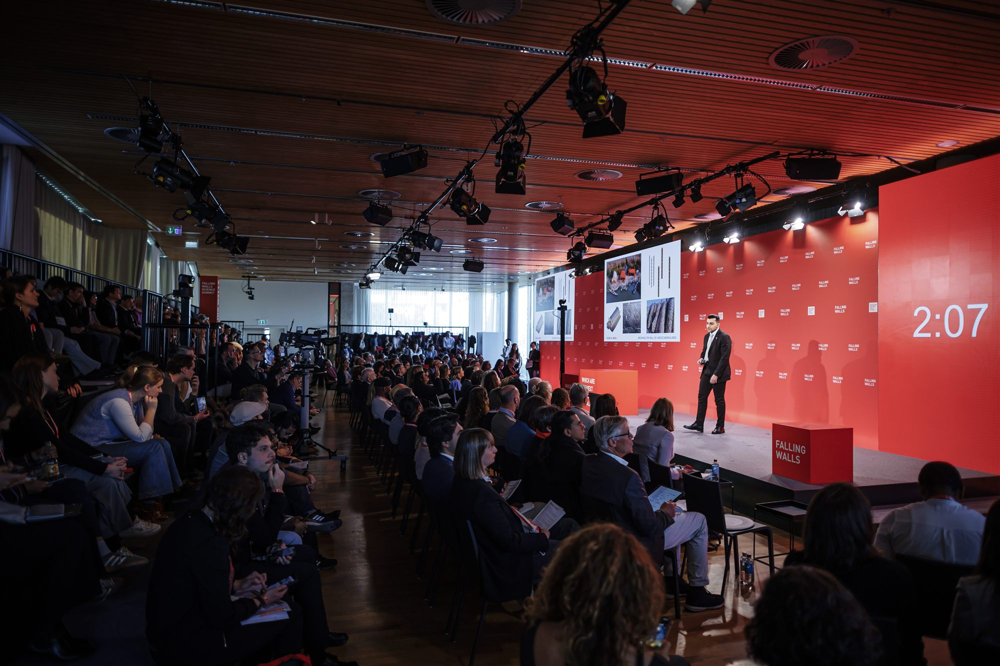

Una red. Un destino.
Cada temporada, los ganadores de Labs de todo el mundo viajan a Berlín. Madrid es la puerta de España.
91Labs en 2026
65Países
3.100+Candidaturas
100Finalistas en Berlín
Labs en España
Otros Labs
Berlín · Global Finale
0 Labs · 0 países en el mapa
Elige un Lab
Haz clic en un punto del mapa o en la lista para ver su ficha y su enlace.
El mapa muestra una selección de Labs publicados por la Falling Walls Foundation. Consulta la red completa en falling-walls.com/lab.
¿Qué muro romperá tu investigación?
La temporada 2027 empieza en febrero. Tu ruta hacia Berlín empieza en Madrid.